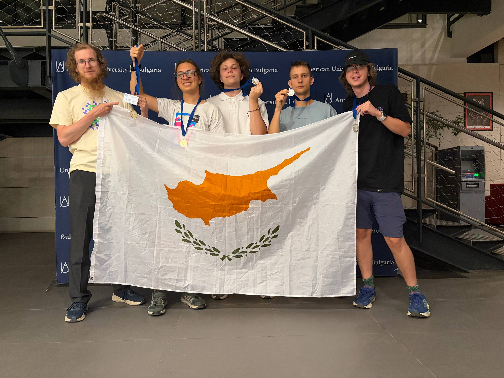

BSc Computer Science & Artificial Intelligence
Neapolis University Pafos
Building AI Agents: From First Principles to Production Systems
Together we will move beyond simple prompt chaining and build truly autonomous, resilient AI systems. There are three parts of the course:
On Tuesdays, 9:00—12:00. Course starts on October 6
Machine Learning and Deep Learning
| No. | Topic | Start | Finish | Points | Est. Time |
|---|---|---|---|---|---|
| 1 | Active On-Site Participation in Lessons | Oct 6 | Nov 10 | 100 | 30h |
| 2 | Simple Multi-Agent System with Memory | Oct 20 | Nov 9 | 100 | 10h |
| No. | Topic | Start | Finish | Points | Est. Time |
|---|---|---|---|---|---|
| 3 | Case-study talk | Nov 10 | Nov 23 | 100 | 20h |
| 4 | Debates | Nov 24 | Dec 8 | 100 | 20h |
The final exam will take the form of a presentation, regarding your own experience and insights of using agents in real projects.
Formula of final score is the following:
FinalScore = (Midterm)*20% + (Course work)*50% + (Exam)*30%

22nd place in 2023 → 15th in 2024 → 10-th in 2025 → 15-th in 2026 → ???